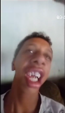

<p>"Mãe tem café?"
    ''Tem não."
    "Pois vou criar um universo repleto de dor e sofrimento. Este mundo que estou prestes à criar será um espelho distorcido de tudo que já vivi, de cada cicatriz que carrego na alma. Vou dar vida a um universo onde a felicidade não passa de uma lembrança distante, uma sombra fugaz que nunca se materializa. Neste universo, as pessoas que me fizeram mal estarão presas em um ciclo interminável de dor, lutando contra forças que não podem vencer."</p>
    